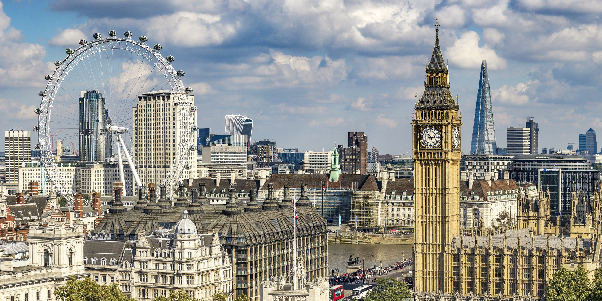
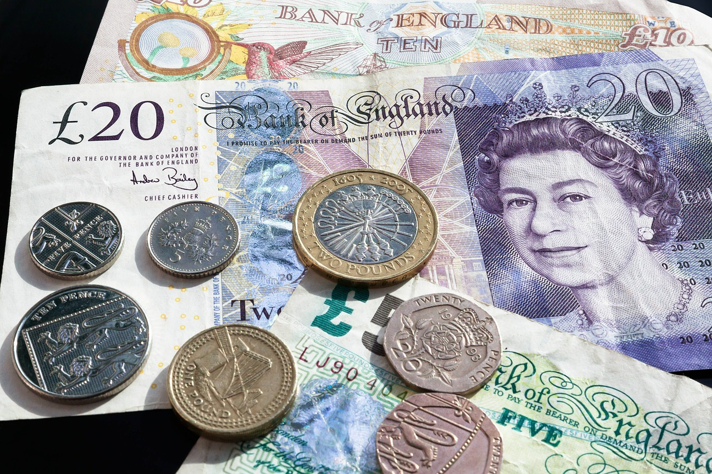
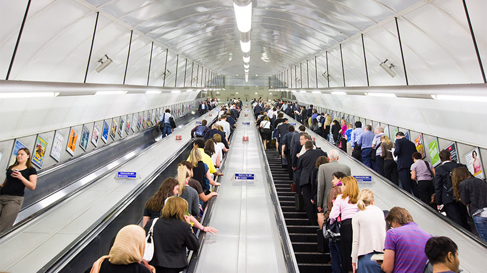
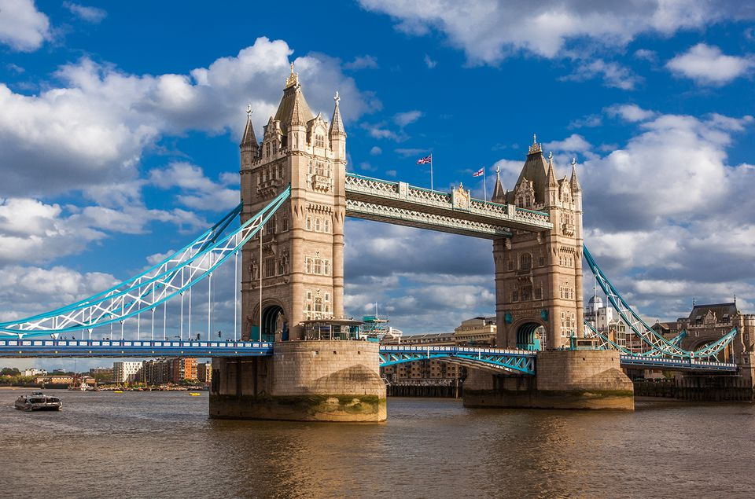

A Brief Overview of London
If you are looking for a city rich in history, culture, food, shopping, and experiences of a lifetime, then London is the city for you! London is FULL of wonderful opportunities and eclectic experiences. There are many things that you can discover during a visit to London, this blog is designed to provide you with a guide to experiencing some of the BEST London can offer. Join us in a quick overview of London and all of the dashing fun that comes along with it!
Fun Fact: Before London got the name “London” it went through several names such as “Londonium”, “Ludenwic”, and “Ludenburg”.
Currency
The official currency that is used here in the United Kingdom is the pound sterling (a.k.a. the pound). Every pound (£) can be split into 100 pence (p). Notes (paper money) come in increments of £5, £10, £20 and £50. Coins come in increments of 1p, 2p, 5p, 10p, 20p, 50p, £1 and £2.
Other Things to Note
- Some say “pee” in place of “pence”
- A pound can be called a “quid”
- A “fiver”: a five pound note
- A “tenner”: a ten pound note
British Jargon

- "Give me a tinkle on the blower": call me up on the phone
- "Bagsy": dibs
- “Poppycock”: that’s rubbish
- "Boot": the back of the car
- “Have a butchers”: to take a good look at something
- “Throw a Sanner in the Works”: to screw up
- “Brolly”: umbrella
Fun Fact: Queen Elizabeth II needs to be granted permission from the Lord Mayor to enter the city of London, poppycock!
Social Cues
If you are planning on taking a trip to London, here are a few things you should know!
- Always stay to the right of an escalator if you are not walking up. It is just courtesy because everyone in London is busy, so leave them some space to speed up their travel time.
- If you are coming from a place where cars drive on the right side of the road, you’re in for a game changer. Always check both ways TWICE before you cross a street. You will thank me later when you have still not been hit by a bus.
- Get accustomed to reading military time because that is how most time is displayed in London!
- Tipping is not mandatory! Most places will include a “tip” in the bill already. Small tips are still appreciated though.
- Remember that sometimes, it’s quicker to walk than to tube (see more details about the Tube here).
- When meeting locals, it is proper to shake hands and respond to any introduction with “Pleased to meet you.”
- Open the doors for others, it is the polite thing to do!
Fun Fact: For those of you North Americans, there is one road in London where driving on the right side of the road is mandatory.
Why Visit London?
London is a wonderful city enriched in culture and diversity. Explore the abundance of shopping opportunities from the major flagship stores on Oxford Street to the eccentric boutiques to the elusive markets. You will never fail to be amazed by all the historic attractions London has to offer. Watch thrilling sports events from tennis, to twickenham (rugby), to football (soccer)! In a city that incorporates a modern take on history, they don't fall short of fantastic views and luscious green spaces. London is the perfect destination for you, no matter your taste or budget. One thing that should be remembered is that London is always evolving and you will always find something new in this breathtaking city.